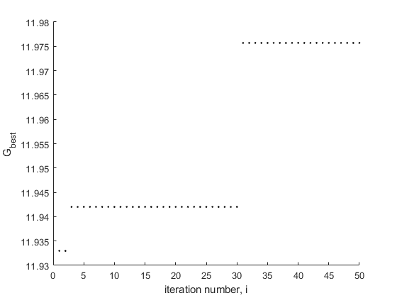

clear all
N = 4;
xl = -2;
xu = 2;
theta_max = 0.9;
theta_min = 0.4;
i_max = 50;
c1 = 2;
c2 = 2;
theta = theta_max;
for i=1:N
X(i) = xl+(xu-xl)*rand;
f(i) = -X(i)^2+2*X(i)+11;
end
V_old = zeros(1,N);
P_best = -100*ones(1,N);
G_best = -100;
count = 0;
for i=1:i_max
for j=1:N
if f(j)>P_best(j)
P_best(j) = f(j);
end
end
if max(P_best)>G_best
G_best = max(P_best);
temp = find(P_best==G_best,1);
X_best = X(temp);
count = count+1;
end
V_new = theta*V_old+c1*rand(1,N).*(P_best-X)+c2*rand(1,N).*(G_best*ones(1,N)-X);
X = X+V_new;
V_old = V_new;
theta = theta_max-(theta_max-theta_min)*i/i_max;
Gbest_plot(i) = G_best;
for i=1:N
f(i) = -X(i)^2+2*X(i)+11;
end
end
figure(1);clf;hold on
plot(Gbest_plot,'k.')
xlabel('iteration number, i')
ylabel('G_{best}')
X_best
X_best =
1.1559
